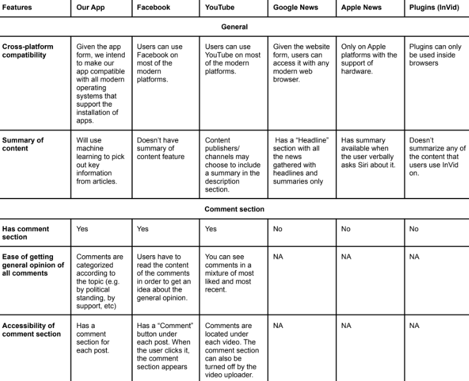

The Daily Dumpling is a high-fidelity news app prototype that’s focused on combating misinformation in the news and simplifying the news-reading process by incorporating 3 main features to help tackle these problems, including built-in fact-checking, multiperspective comments, and a summary for each article.
People need a way to easily extract the important information from a news article and determine if they’re a reliable/unbiased source in order to help them find accurate information quickly.
As people get busier with their lives, it can be difficult to devote time to reading news articles and to check if they’re a reliable and unbiased source. People need a way to easily extract the important information from a news source, and to check if it’s valid. To address these problems, my team and I created The Daily Dumpling, a high-fidelity news app that’s focused on combating misinformation in the news and simplifying the news-reading process. It incorporates 3 main features to do this: built-in fact-checking, multiperspective comments, and a summary for each article.
To understand the problem more, we started researching different online communities and resources centered around our topic of misinformation in news. Through our research, we found that misinformation is often repeated due to their compelling and sensationalistic nature. This repetition makes people more likely to believe them even if it doesn't align with their beliefs.
We created an online questionnaire to gain insight on how people consume news and their perceptions on major news sources. We also conducted in-person interviews to explore more in-depth how users consume and perceive news. From our survey and interviews, we found 3 key problems:
Based on the results from our questionnaire, we created user personas that detailed the characteristics, goals, needs, problems and wants of our target demographic.
We created a competitive analysis matrix to view what features other news services and social media platforms had. We examined 3 main aspects: General, Comment section, and Fact-Check. From our competitive analysis, we found that although many of the competitors had commenting and fact-checking, they weren't implemented in a way that prevented misinformation. All comments are neutral so it's hard to identify a comment's stance, which can potentially make it harder to detect biases in the news article. Additionally, the fact-checking features for these apps were often hard to find and out-of-the way for users, which can make it hard for users to utilize it.
After consolidating the information we got from our user research and competitive analysis, we ideated on 3 main features for our app that would combat misinformation:
To ideate on the navigation and general look of our app, we created a few sketches that incorporated our features.

We picked out which components and details we liked across all of our sketches and compiled them to create our first iteration of our lofi prototype.
We invited users to test our first iteration to identify any improvements we could make. Our users provided us with some useful suggestions such as including a search bar to search for articles, an overall fact-check score to quickly identify the reputability of the article, and a notification indicator when people respond to their comments.
We took our user's suggestions and incorporated them into our final lofi.
We added a search bar. For this, we included a search icon, which would expand to become a search bar when it's clicked.

We added a notification menu on our side menu.


We added an overall fact-check score at the bottom of the article.
After we solidified the general structure of our app through the lofi, we worked on styling our app. We first generated a few adjectives that described our app and compiled images that fit those adjectives.
Our moodboard helped us decide on which colors we should use for our app. From there, we chose fonts based on our adjectives and tried to choose ones that were professional and bold. When creating our logo, we went through various iterations trying to incorporate our primary colors and dumpling/news visuals to fit our overall theme.
After finalizing our style guide, we started designing some user elements like buttons, comments, pages and menus. We strived to create a minimalistic and professional look so our app can convey a sense of trust and to allow users to solely focus on the information presented.

We implemented our style guide and user elements into our lofi prototype to create our hifi prototype.
Once again, we invited users to test out our prototype. Some of the suggestions we got from our users were explaining how fact-checking scores are generated, having a saved article section so user's can easily access articles that they save, and graying out notifications that the user has already read to create a clear visual focus on the unread ones.
We took our user's suggestions and incorporated them into our final lofi.
We added an about page on the side menu that explains how the fact-checking scores are calculated.
We added a saved article section on the user's profile.
We grayed out notifications that the user had already read.

If we were to continue working on this project, we would work on: